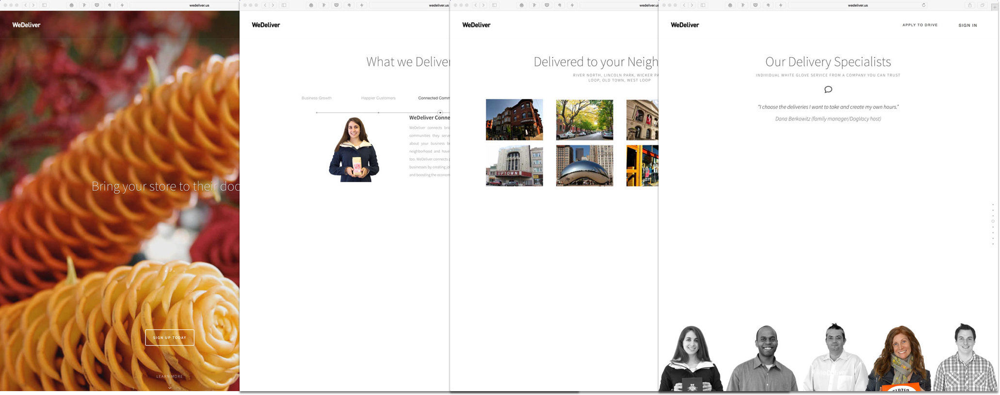

My team was given the task of redesigning their B2B service promotional website. WeDeliver utilizes a web-based platform and crowd-sourced delivery fleet to accomplish their goals. This new website would serve to entice new businesses to sign up for the delivery service. The team at WeDeliver did not want to stray too far from the aesthetic of their existing website.
The existing GivingAid website design
WeDeliver’s existing website had some usability issues. We conducted a heuristic evaluation so we could identify the main problems and ensure they didn’t make their way into the new website. After the evaluation, we interviewed several business owners who use the WeDeliver service so we could understand what drew them to the service in the first place. We found that the business owners were all recruited by WeDeliver associates, not the actual website. This meant that the existing website was not doing its main job. Namely, presenting the many benefits WeDeliver can offer to a business.
The team at WeDeliver told me they liked the simplicity and sleekness of websites like Uber and Square. I chose muted grays and purples with a gold accent to bring a luxe feeling to the service. I kept the typeface, Source Sans Pro from the exisiting website, and paired it with Roboto Slab. Since I would be cutting the copy in half, it was important to choose a typeface that would convey the succinct information strongly. A blocky slab serif such as Roboto momentarily grabs your attention while your eye is drawn down to the softer body copy of Source Sans Pro.
I was also asked to explore different designs for a landing page that would be a gateway to the B2B page above and Locally–a consumer facing app also owned by WeDeliver. WeDeliver made the decision to drop the landing page before I started on design for the main site, so there are major differences in branding as these represent early explorations.